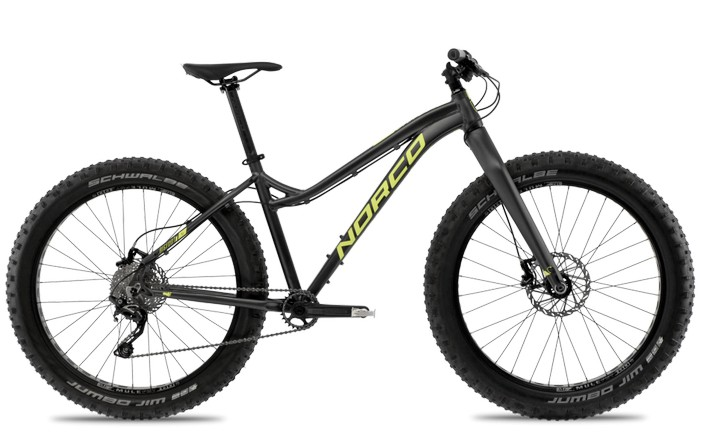
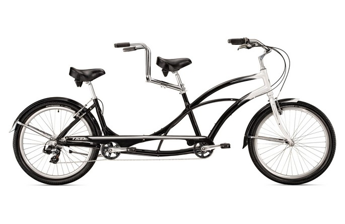

Виды велосипедов
Следующее, с чем мы познакомимся - это виды велосипедов. Перед тем, как помчаться в магазин за покупкой двухколесного транспорта, нужно разобраться какие бывают типы велосипедов. Это нужно для того, чтобы сразу приобрести подходящий байк под конкретные задачи. Тут будут перечислены все виды велосипедов. Также после ознакомления с этой страницей вы сможете пройти тест в приложении: "Какой тип велосипеда подходит для тебя?"
Вы можете встретить другие его названия: MTB, ATB, mountain-bike, хардтейл, сикстер, найнер, По назначению этот тип можно разделить на велосипеды для даунхилла, фрирайда, дёрта, стрита, кросс-кантри. Это самый популярный и распространенный вид велосипеда. Предназначен для езды по бездорожью. Но современные велосипедисты используют горные велосипеды для езды повсюду, от убитых грунтов до идеально ровного шоссе. Внешне такой байк легко идентифицировать. Ему свойственна массивная прочная рама, колёса с широкими покрышками и зубастым протектором, амортизационная вилка, большое количество передач, тормоза ободные или дисковые. Под конкретные задачи горный велосипед комплектуется совершенно по-разному, все зависит от того, хотите вы кататься по проселочным дорогам или участвовать в соревнованиях, преодолевая сложные препятствия. Цены на велосипеды стартуют от 200$ и могут достигаться нескольких тысяч.
По сути это тот же самый горный велосипед, но на таких байках амортизация присутствует как на переднем, так и на заднем колесе. Задняя амортизация гораздо сложнее передней (вилки). Каждый производитель стремится создать свою собственную уникальную разработку задней подвески. Условно их можно разделить на два вида:
Стоимость от 1000$ долларов.
Фэтбайк — это велосипед с толстыми покрышками. По части геометрии рамы и посадке схож с горным велосипедом. Отличается повышенной проходимостью. Способен с легкостью преодолевать такие сложные поверхности, как рыхлый песок, снег, грязь. Ширина покрышек составляет 3,5-5 дюймов, а давление в них держится на уровне 0,2-2 атмосферы. Фэтбайки отлично подходят не только в качестве велосипеда для развлечений, но и для туризма по глухим местам.
Синонимы: шоссе, roadbike, роудбайк, гоночный велосипед. Этот байк относится к категории велосипедов, предназначенных для шоссейных велогонок. Для шоссейников характерны: легкий вес руль баран узкие покрышки (слики) Все это обеспечивает аэродинамическую посадку, поэтому долгая езда с высокой средней скоростью это не проблема. Но дорожное покрытие должно быть очень хорошим. На такой велосипед не повесишь крылья и багажник, но это стоит того, чтобы прокатиться с ветерком пару сотен километров. Стоимость от 700$ долларов.
Синонимы: велокроссовый, циклокроссер. Внешне похож на шоссер, но есть отличия. Этот тип велосипеда адаптирован для быстрой езды по бездорожью. Отличается более прочной рамой и слегка измененной посадкой, покрышки зубастые, тормоза кантилеверные или дисковые (встречаются чаще). Хоть этот тип и предназначен для велокроссовых гонок по бездорожью, это не мешает велолюбителям использовать его в качестве универсального велосипеда для езды повсюду. Можно установить крылья или багажник. Фишкой циклокросса является то, что во время гонок велосипед часто приходится носить на плече, поэтому их делают максимально легкими. Ценник стартует от 1000$
Велосипеды типа BMX и триал. Триальные модели легко узнать, у них длинные, низкие и легкие рамы, нет седла, вынос длинный, а руль широкий. Задняя покрышка зачастую толще передней. Все это позволяет отлично держать баланс на заднем колесе и выполнять сложные спортивные трюки. Велосипед типа BMX тоже имеют низкую раму. Колеса 20 дюймов. На оси крепятся специальные трубки (пеги). На BMX можно вращать руль сколько душе угодно, тросы при этом на запутаются. Эта фишка обычно применяется в трюках. Цены стартуют от 200$, но лучше выбирать модель подороже.
Также известен как Track bicycle. Это специальный вид велосипеда, предназначенный для гонок на треке. На нем отсутствует трансмиссия и тормоза. Колесо связано с педалями, поэтому свободного хода нет. Крутятся педали — крутится и колесо. Руль баран — для достижения спортивной посадки. Это самый легкий из всех велосипедов, но цены на профессиональные трековые велосипеды стартуют от нескольких тысяч долларов.
Это подвид шоссейного велосипеда, он применяется в гонках с раздельным стартом, а также популярен в триатлоне. Тут идет упор на аэродинамичность. Узкие колеса, руль с лежаком, геометрия рамы заточена на максимальную обтекаемость воздухом. Цены на разделочные велосипеды начинаются от 3000$
Синонимы: citybike, ситибайк, дорожный велосипед. Классификация велосипедов городского типа довольно обширна. Если коротко, то это байки для поездок на работу и прогулок по парку, Свойства городского велосипеда: тяжелый комфортный есть багажник или корзинка передние и задние крылья защита цепи широкое седло одна скорость или планетарная втулка ригидная вилка вертикальная или почти вертикальная посадка подножка Одним словом, этот вид оптимален для коротких поездок по городу в любую погоду и в любой одежде. Ситибайкам характерна неприхотливость в обслуживании. Данный тип очень распространен во многих странах Европы в качестве основного транспортного средства. Цены стартуют от 200$
Синонимы: Hybrid, гибрид, кроссовый велосипед. Виды велосипедов настолько богаты своим разнообразием, что понадобилось создать отдельный тип, который перенял в себя свойства горного, шоссейного и городского велосипеда. Формально это упрощенный горный байк, более приспособленный для езды по асфальту. Более легкие и высокие рамы, вилки с небольшим ходом, тормоза дисковые или V-brake. Колёса 28 дюймов, протектор умеренно агрессивный, чтобы сохранять устойчивость на грунте и хорошо катить по асфальту. Многие дополняют свой велосипед крыльями, багажником, рогами и другими аксессуарами. Кому подойдет такой велосипед? Тем, кто ищет универсальности. Цены начинаются от 300$
Синонимы: Touring, туристический велосипед. Эти типы велосипедов идеальны для туризма по асфальтовым дорогам. Внешне напоминает шоссейный тип за счет руля барана. Однако у туринга есть ряд своих отличий: материал рамы сталь, алюминий, хромоль или титан багажник с расчетом на большой вес (передний и задний) жесткая стальная вилка прочные и надежные колеса трансмиссия с внедорожным расчетом хорошая защита от грязи мощная светотехника Поскольку этот тип велосипеда рассчитан на преодоление больших расстояний с багажом, то в нем надежность важнее веса. Не так много производителей выпускает туринги, поэтому цены на них большие, начиная от 1000$ и выше.
Также извествен как Folding bike. Отличный вариант для передвижения по городу. За счет небольших колес велосипед легко складывается и его можно взять с собой в офис. Скорость, комфорт и управляемость держатся на среднем уровне из-за компактности. Накат на таком велосипеде слабоват, но если ваша цель не десятки километров за подход, то это отличный выбор. Цены от 300$ и выше.
Их бывает очень много. Двухколесные, трехколесные и даже четырехколесные (2 дополнительных боковых колеса). Чаще всего имеют одну скорость и ножной тормоз. Но некоторые производители комплектуют свои детские велосипеды многоскоростной трансмиссией и тормозами разного типа, делая их похожими на взрослые. Цены стартуют от 120$
Велосипеды для девушек отличаются своей конструкцией. Обычно различия проявляются в геометрии рамы. Также часто сокращено расстояние между седлом и рулем. Сидения учитывают особенности женской анатомии. Существуют горные, шоссейные, городские и многие другие типы велосипедов, созданные специально для девушек. Однако, большинство из прекрасной половины человечества предпочитает кататься на традиционных велосипедах и не испытывает при этом дискомфорта.
Не трудно догадаться, что это велосипеды для транспортировки грузов. Грузовые чаще всего сделаны как трехколесные и имеют сзади большую корзину. Такой велосипед станет отличным помощником в хозяйстве где-нибудь в селе. А еще они довольно популярны в некоторых азиатских странах. Велосипеды прицепы представляют собой конструкцию, с помощью которой можно сделать тандем. Тот, кто сидит спереди отвечает за направление, а тот, кто крутит педали на прицепе, просто любуется красотой. Здорово, не правда ли?
Это тип велосипеда, который подразумевает наличие электродвигателя. Основная задача такого подхода помощь при кручении педалей, но некоторые ездят на таких велосипедах, как на мопедах. Сделать электровелосипед можно почти из любого байка, установив на него мотор-колесо. Однако, многие производители выпускают свои собственные модели с самым разным дизайном и запасом хода. Это замечательный экологически чистый вид транспорта, позволяющий без проблем преодолевать расстояние в несколько десятков километров.
Тандем — это велосипед, на котором могут ехать одновременно 2 человека. За переключение скоростей и рулевое управление отвечает сидящий спереди. Сидящий сзади крутит педали и любуется пейзажем. Традиционное тандемы используются для езды по асфальту, но некоторые производители также выпускают внедорожные модели. Кататься на таком велосипеде очень весело. Цены стартуют от 500$
Также известен как лежачий велосипед. Глядя на фото можно понять, что спина ездока размещается на специальном лежаке. Лигерады обладают хорошей скоростью разгона, высокой маневренностью, на них можно ехать долго и совершенно не уставать. Единственной их слабостью являются подъемы.
Или моноцикл. Это велосипед с одним колесом, над которым собственно и сидит человек. Удивительно, но даже этот необычный вид можно классифицировать на несколько типов: трюковые унициклы, горные и дорожные.
Это велосипеды для городских прогулок. От классических моделей они отличаются необычным дизайном и посадкой. Часто такие модели именуются «растабайками». Для чего они подойдут? Для неспешной покатушки на пикник, на работу, в парк. На них можно ездить долго и не уставать, благодаря очень комфортной посадке и широкому седлу.